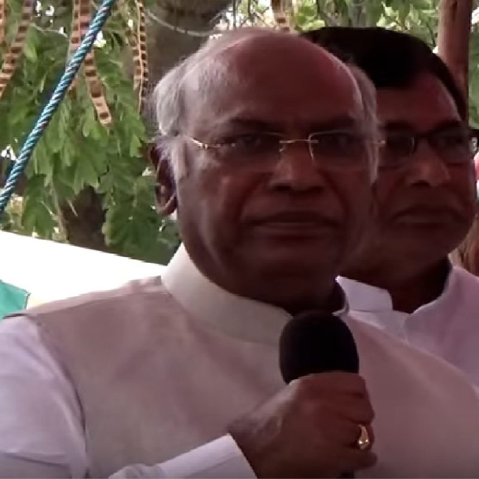

खरगे ने PM मोदी को लिखा लेटर, कर्नाटक के लिए की ये बड़ी मांग

कांग्रेस अध्यक्ष मल्लिकार्जुन खरगे — कर्नाटक सूखा राहत के लिए प्रधानमंत्री को पत्र
कर्नाटक में सूखे की स्थिति लगातार गंभीर होती जा रही है. फसल नुकसान, पानी की कमी और किसानों की परेशानी को देखते हुए केंद्र सरकार से तत्काल मदद की मांग की गई है. राज्य सरकार ने खरीफ 2026 के सूखे से प्रभावित इलाकों के लिए केंद्र से 3705.30 करोड़ की सहायता मांगी है. यह मांग शुरुआत में 101 सूखा प्रभावित तालुकों के लिए की गई थी. कर्नाटक में इस साल बारिश की कमी का असर खेती और जल स्रोतों पर पड़ा है. 9 सितंबर तक राज्य में बारिश की कमी करीब 34 प्रतिशत बताई गई थी. उस समय 31 में से 30 जिलों और 240 में से 182 तालुकों में बारिश की कमी दर्ज की गई थी. राज्य के आकलन के अनुसार करीब 19.52 लाख हेक्टेयर में फसल को नुकसान हुआ और शुरुआती अनुमान में फसल नुकसान की कीमत 18,748.23 करोड़ बताई गई थी. इसके बाद में सूखे का असर और बढ़ा. वैज्ञानिक आकलन के बाद 76 और तालुकों को सूखा प्रभावित घोषित किया गया, जिससे यह संख्या